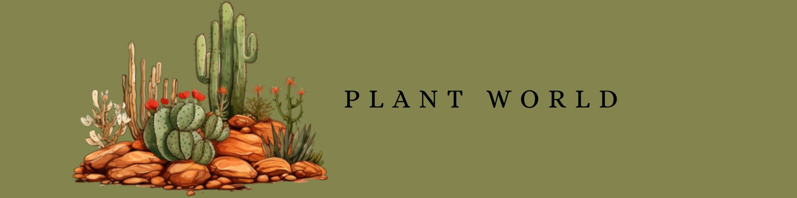
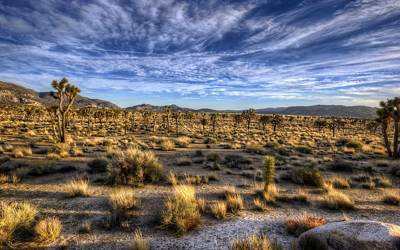
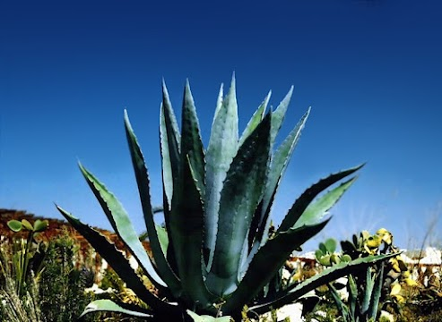
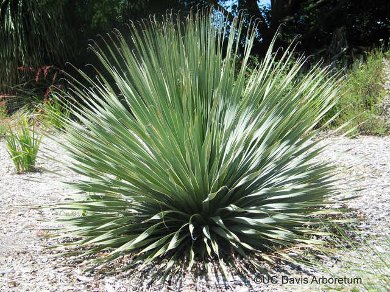
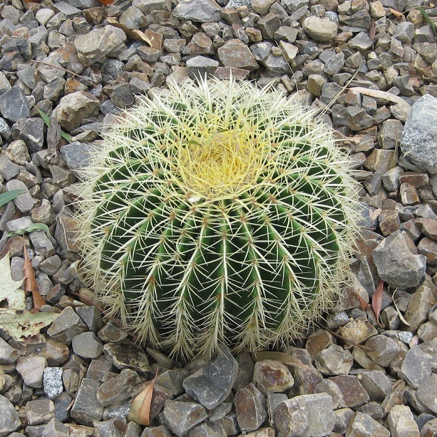
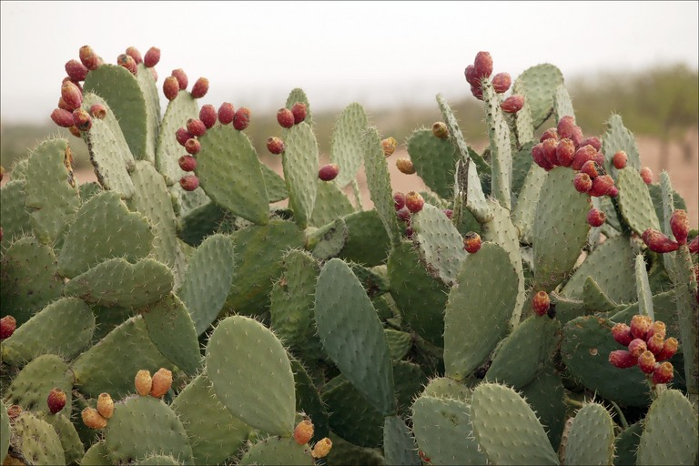

In the desert Southwest, water is critical to our lives. We must learn to conserve our water resources without compromising our environment. Home gardeners and landscape professionals can help preserve our water resources by selecting plants that are conducive to the environment. Experienced gardening professionals in the Southwest regions of the country have learned many lessons through the years. They especially have learned which plants can thrive in the hot and arid climate and incorporate low water use. When landscaping in the desert Southwest, you need to consider resource consequences.The desert plants featured on this Web page have a natural beauty which can enhance any desert landscape. All plants shown are chosen for their hardiness and low water usage. Browse the page by s rolling or use the selection menu below to move to a specific plant.
These are some of the plants that survive well in the desert Southwest. Select a category to read more information about each type of plant.
Agave Americana | Desert Spoon | Golden Barrel | Prickly Pears

(Agavaceae)
The Agave species is known for its striking form and general tolerance to cold, heat, sun, drought, and poor or alkaline soils. Agaves are some of the most useful plants in the hot arid regions of the Southwest. Sizes of agaves vary from one to six feet in height. They have many interesting leaf styles and color variations. The pointed leaves of the Agave Americana are armed with thorns at the tips. This leaf formation allows them to capture tiny amounts of rain, which guides the moisture down to the roots.These plants need water occasionallyuntil established or when plants show stress by wilting or withering. You should prune them in September.

(Dasylirion wheeleric)
Desert Spoon is a very dependable plant for the arid environment of the Southwest. This plant was used by the natives of the region for food and fiber. The leaf blade of the Desert Spoon is a slender,toothed gray-green. The leaves radiate from the center of the plant in all directions.Growth is a moderate five to eight feet, and the leaves spread equally. Some plants develop a bloom stalk that grows five or six feet above the foliage. The bloom is topped by a long plume of straw-colored flowers that look like grain.The Desert Spoon can be planted any season but summer and pruned in October.

(Echinocactus grusonii)
The Golden Barrel grows to a height of four feet and width of three feet. The yellow Flowers of the Golden Barrel generally grow in the spring. The foliage texture is coarse, and the foliage color is gold for this favorite Southwest plant. The Golden Barrel has a landscape statement when they are clumped together. The Golden Barrel grows well in full to reflected sun. It should be watered occasionally and needs no maintenance.

(Opuntia violacea santa-rita)
This type of prickly pear, called Santa-Rita Prickly Pear, is very striking because of its color. The Prickly Pear segments are tinged with purple or are totally purple. This gives a dramatic color contrast to other Southwest plants. Segments can grow to eight inches. Yellow Flowers may turn red near the base inside and produce red or purple fruit. The Prickly Pear is excellent to use as a color feature in a landscape design.The Prickly Pear can be cut back any time to shape or remove leaf pads too close to high-use areas.
To find out more information about Desert Plans, visit the